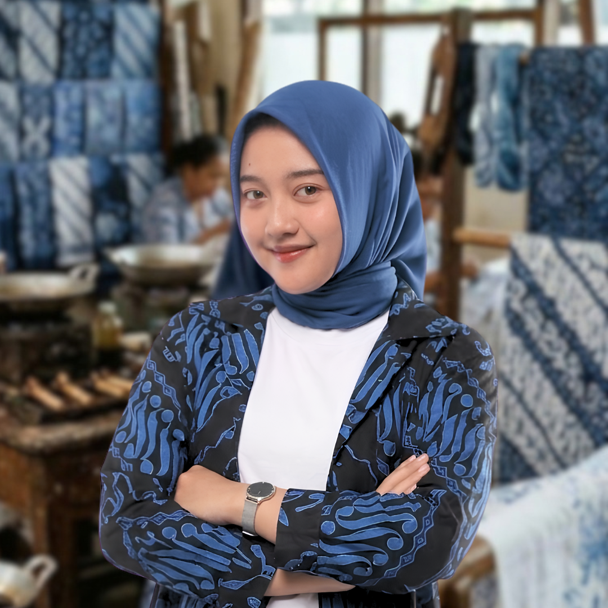

FISTRA DEKA ELVIRA
Professional MC & Media EntrepreneurMalang, Indonesia
Menghidupkan setiap momen dan pesan melalui kekuatan suara, gaya, dan komunikasi. Berbekalkan pengalaman dalam dunia broadcasting, kini mendedikasikan diri sebagai profesional media dan perniagaan.
MC & Voice Over
Memandu acara komersial & menyediakan suara naratif dengan standar profesional.
Lihat KaryaEx-News Anchor
Pengalaman berharga dalam pembacaan berita & penyampaian informasi secara lugas.
Jejak Karir